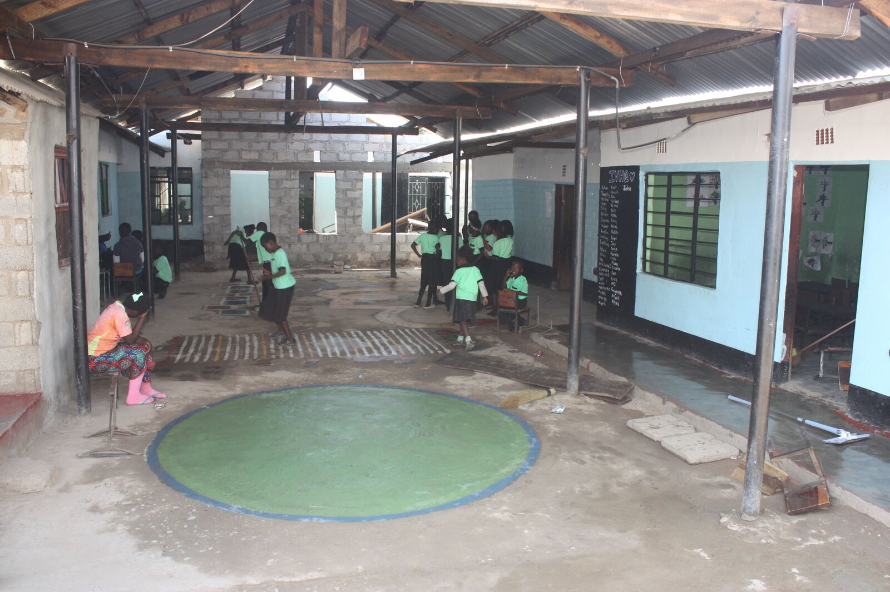
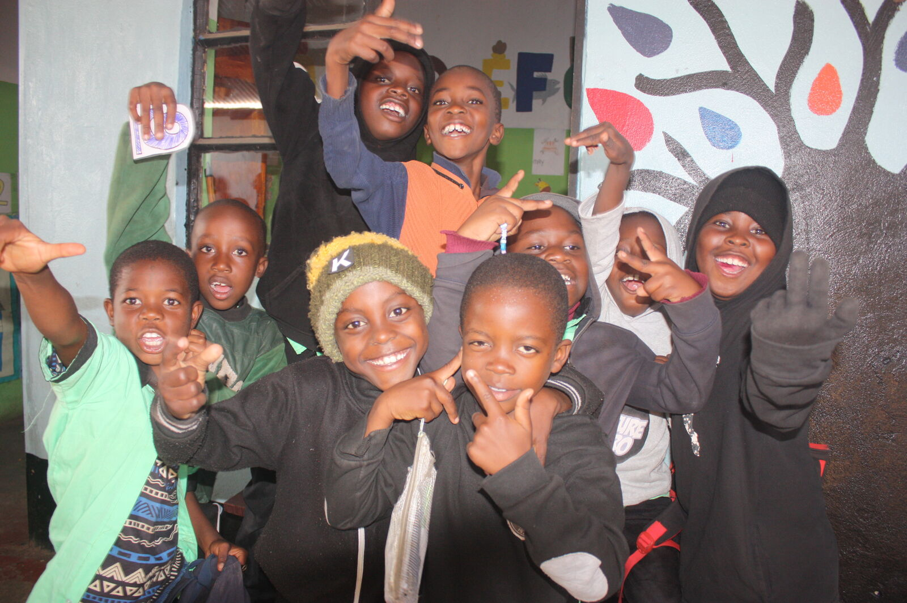
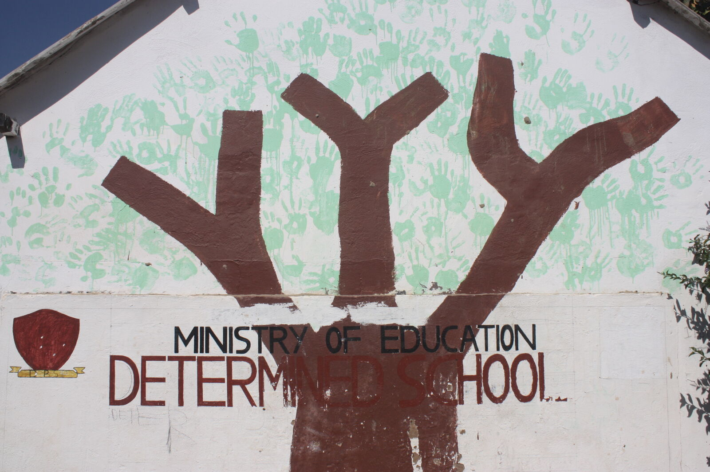
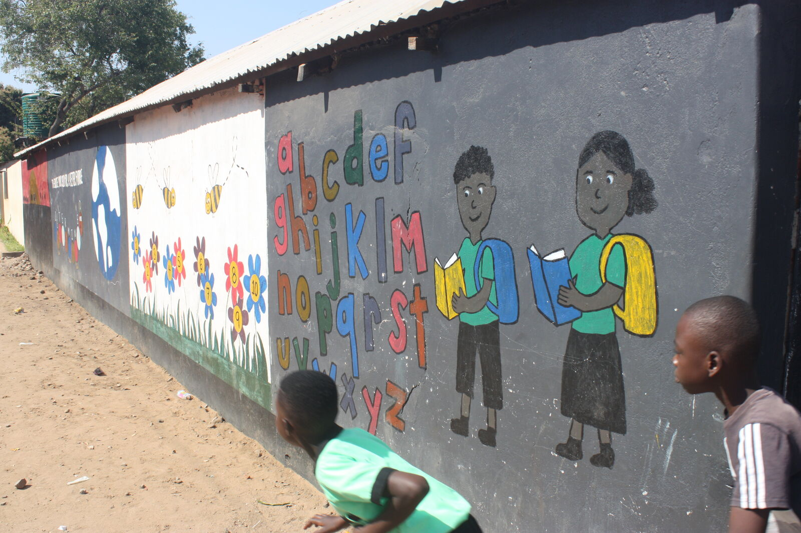
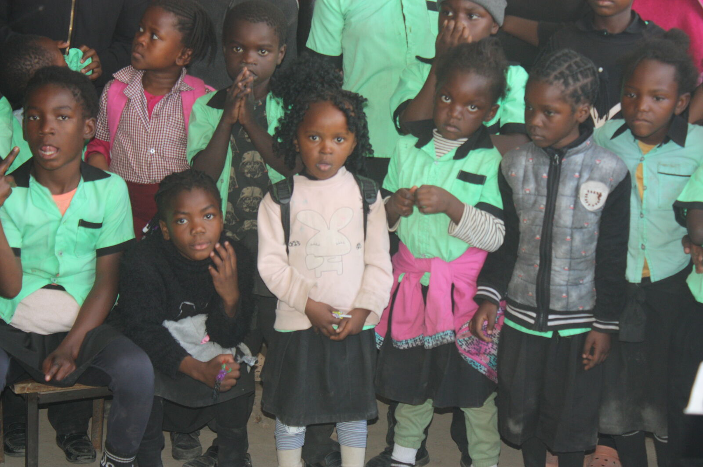
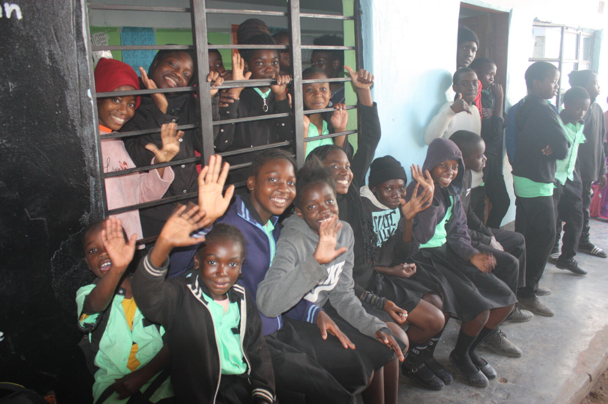

About Determined Primary School
A community school in Maramba, Livingstone, built on the belief that every child can succeed.
Who we serve
Determined Primary School offers pre-primary and primary education to children in the Maramba area of Livingstone, roughly between three and sixteen years of age. Around ten teachers work across the school, guiding learners through the years that matter most for their academic and personal development.
What began as a home-based classroom has grown, over time, into an established institution — a change driven by families in the community who wanted quality education close to home.


Our philosophy
We aim to nurture confident, responsible, and curious learners — children who feel free to ask questions, explore ideas, and build a genuine love of learning. Academic achievement matters, but so does character: confidence, respect, and a strong sense of responsibility are taught alongside literacy and numeracy.
We believe every child has the potential to succeed when given encouragement, guidance, and the chance to grow at their own pace. Teachers work to recognise each learner's individual strengths while offering the support needed to work through challenges.
The atmosphere we aim for
A welcoming, supportive atmosphere is central to how we teach. We want classrooms where children feel safe, valued, and motivated to take part — and positive relationships between teachers, learners, and parents are what make that possible.
A glimpse of our school
Real moments from around Determined Primary School in Maramba, Livingstone.




Part of the community
Determined Primary School grew out of the community it serves, and it continues to rely on that same community — families, volunteers, and neighbours — to keep growing. That relationship is at the heart of the school's identity.
Read the full story